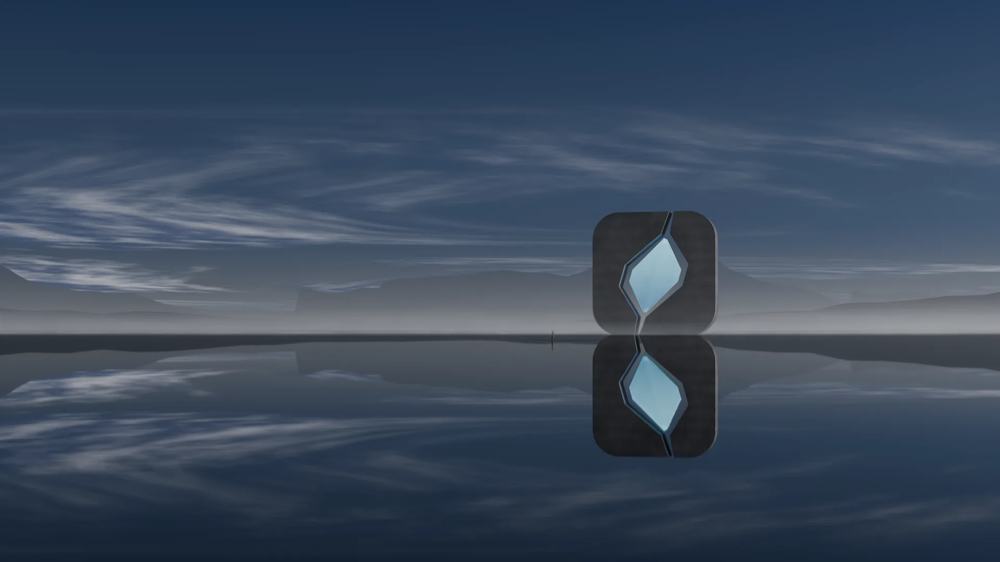

Antimony is a software company in London that builds for the people who make the work.
What we make
Orbe
The creator’s side of every sponsorship deal.
Live
immiscible
Rules, approvals and a signed record for what AI agents spend and do.
Alpha
Idyll
Social without the scroll.
Soon